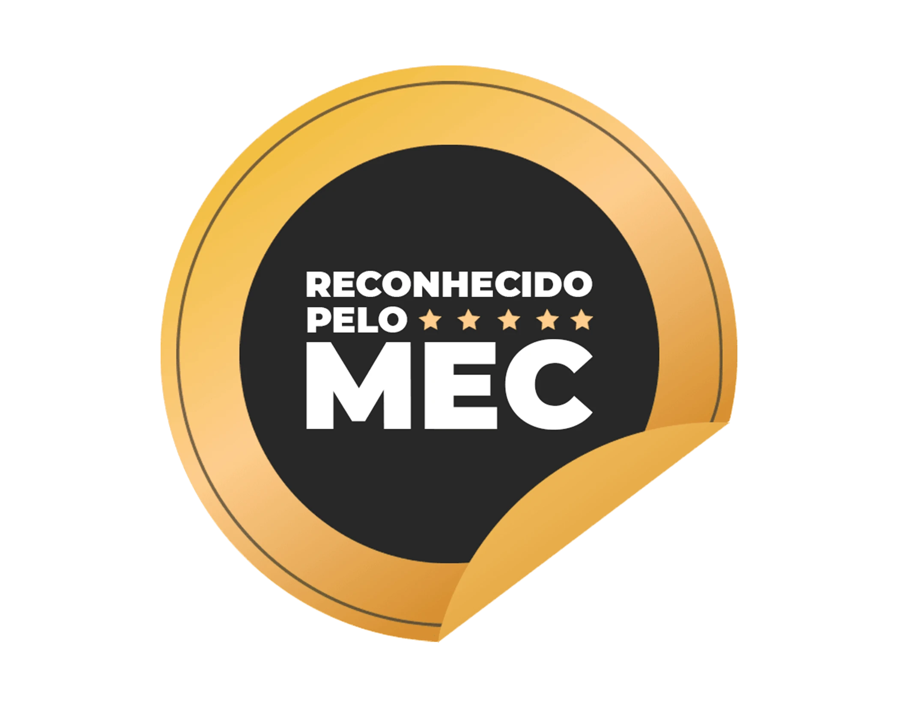

NOVA TURMA PÓS-GRADUAÇÃO GGSR
Condição especial exclusiva para inscritos na Aula Magna
Inscreva-se na Pós-Graduação
Garanta sua vaga com nossa oferta exclusiva.
Compra 100% segura. Acesso imediato.
Ganhe Acesso Vitalício ao PAP + F2W
Matriculando-se na Pós-Graduação em GGSR hoje, você garante acesso permanente e com vitaliciedade aos dois maiores programas de Geotecnologias e WebGIS da Ambiental Pro.
Programa Ambiental Pro (PAP 5.0)
O ecossistema definitivo em Geoprocessamento, Sensoriamento Remoto e Inteligência Artificial do país. Domine as principais ferramentas do mercado do zero ao avançado.
- Domínio Completo: Treinamento prático em QGIS, ArcGIS Pro, Drones, R e Python aplicados.
- Agentes de IA 24/7: Assistentes inteligentes dedicados a tirar dúvidas técnicas e revisar seus mapas.
- Suporte Diário Individual: Plantão com especialistas do setor para destravar seus projetos reais.
- Certificado MEC (200h): Extensão universitária válida nacionalmente em concursos e seleções.
Formação F2W (WebGIS & WebApps)
Aprenda a construir portais geoespaciais interativos, dashboards dinâmicos e MapViewers profissionais utilizando Inteligência Artificial (Vibe Coding).
- MapViewers Profissionais: Crie mapas web interativos e dashboards que impressionam clientes e órgãos.
- Integração com IA (Vibe Coding): Desenvolva aplicações WebGIS sem necessidade de anos de programação tradicional.
- Hospedagem e Publicação: Coloque seus projetos no ar com arquiteturas modernas e de alto desempenho.
- Casos Reais de Mercado: Construção de soluções sob medida para demandas ambientais e corporativas.
O que significa Acesso Vitalício?
Sem mensalidades, anuidades ou taxas de renovação. O seu acesso ao PAP 5.0 e à Formação F2W é para sempre. Você terá direito a todas as regravações de aulas, atualizações tecnológicas, novos módulos e aos Agentes de IA lançados no futuro sem pagar nada a mais por isso.
O que você precisa saber sobre a
Pós-Graduação GGSR
Uma especialização profissional completa, estruturada para atender às demandas de mercado com máxima flexibilidade jurídica e técnica.
Aulas 100% Online
Estude no seu próprio ritmo, de onde quiser e com acesso vitalício.
Duração de 12 Meses
Conclua a sua especialização e conquiste seu título em apenas 1 ano.
Carga Horária de 440h
Conteúdo completo do básico ao avançado com programação aplicada.
Provas Práticas e Objetivas
Avaliações diretas e objetivas, com até 3 tentativas por disciplina.
Título Profissional
Torne-se Especialista em Geoprocessamento, Georreferenciamento e Sensoriamento.
Diploma Chancelado pelo MEC
Especialização reconhecida nacionalmente para acelerar sua carreira.
Grade Curricular: 11 Disciplinas Estruturadas
Uma jornada de aprendizado do básico ao avançado, abordando legislação, geodésia, bancos de dados e programação aplicada.
Validação Legal, MEC & CREA
Sua especialização conta com todos os requisitos legais exigidos pelos conselhos de classe e pelo Ministério da Educação.
Diploma Reconhecido pelo MEC & Certificado
Ao concluir a Pós-Graduação, você receberá o diploma oficial de Especialista registrado formalmente no Ministério da Educação (MEC) em parceria com a Faculdade Anhanguera/Pitágoras/Unopar.
O certificado digital é emitido com hash de validação nacional, código de verificação seguro e todas as atribuições legais regulamentadas.
Você pode consultar a regularidade da nossa Pós diretamente no portal oficial do e-MEC.


Registro Oficial no CREA
A estrutura curricular atende integralmente à Decisão Normativa 116 do CONFEA, que rege as matérias exigidas para solicitação de extensão de atribuição de Georreferenciamento.
O curso está formalmente registrado no CREA-RJ (Relação de Escolas e Cursos), permitindo solicitar sua extensão profissional no seu respectivo CREA regional ao concluir.

Aprenda com quem é Referência no Mercado
Nossos mentores são engenheiros, geólogos, geógrafos e doutores atuantes que trazem a vivência de projetos reais para a sala de aula.

Henrique Gonzalez
Coordenador & FundadorEngenheiro Ambiental formado pela UFRJ, com estudos na University of Technology em Sydney (Austrália) e vivência em consultoria com análise espacial de dados e monetização de mapas.

Vitor do Sacramento
Mentor de Big Data & GeoGeólogo (UNB) com MBA em Adm. de Bancos de Dados, Cientista de Dados Geoespaciais e líder em Inteligência de Dados com ampla vivência em monitoramento climático e agronegócio.

Luís Antônio Soares
Mentor de Cartografia & GeodésiaEngenheiro Agrimensor e Cartógrafo (UFU), Mestre em Ciências Geodésicas (UFPR), especialista em Geomarketing (Unyleya) e levantamentos territoriais.

Ana Beatriz Ulhoa
Mentora de Perícia & PolíticasEngenheira Ambiental (UCB), Pós-graduada em Políticas Públicas (UnB/FIOCRUZ), Mestre em Meio Ambiente (Uniderp) e Mestre em Engenharia Bioambiental e da Paisagem (UPV - Espanha).

Charlie Hudson
Mentor de Processos & ProjetosEngenheiro de Produção (UNIVERSO), MBA em Projetos (UFJF), Mestre em Administração (UFJF) com foco em eficiência e precificação.

Rodolfo Finatti
Mentor de SIG & PlanejamentoGeógrafo (UNESP), especialista em Geoprocessamento (SENAC), Mestre em Geografia e Planejamento e PhD em Geografia e Organização Industrial (USP).

Raquel Carnivalle
Mentora de ESG & CircularidadeDoutora em Ambiente e Sociedade (UNICAMP), Mestre em Saúde e Trabalho (SENAC), Bióloga (UPM) e coordenadora de MBAs em Sustentabilidade.

Bismarck Feuchard
Mentor de Agrimensura & CampoEngenheiro Civil, especialista em topografia e geodésia aplicada à regularização de imóveis rurais e urbanos junto ao SIGEF/INCRA.
O que dizem os nossos Alunos Pro
Profissionais que transformaram suas carreiras e multiplicaram seus faturamentos aplicando o método da Ambiental Pro.

Luan D Olivêira
Engenheiro Agrícola"Excelente pós-graduação em Georreferenciamento, Geoprocessamento e Sensoriamento Remoto! Professores qualificados, disciplinas bem estruturadas e ainda um grupo exclusivo de alunos para networking. Recomendo demais! Padrão Ambiental Pro de excelência!"

Robson Matos
Engenheiro Químico • Defesa Civil AM"Decidi encarar o desafio do geoprocessamento com a Ambiental Pro e está fazendo muita diferença no meu trabalho na Defesa Civil. Produzia mapas simples no início, e hoje elaboramos o mapeamento das áreas de risco nos 62 municípios amazonenses de forma muito mais profissional."

Lucas Guerra
Engenheiro Ambiental"Essa pós consolida minha trajetória na área ambiental, ampliando minhas competências técnicas em geoprocessamento. Com essa nova formação, expando minha atuação também para o campo do georreferenciamento e da regularização fundiária em todo o Brasil."

Bruno Carvalho
Engenheiro Florestal"Esse aprendizado amplia minha capacidade de integrar análises ambientais, florestais e geoespaciais, fortalecendo minha atuação em projetos de manejo sustentável e regularização fundiária. Excelente didática e professores."

Lucas Oliveira
Analista de Geoprocessamento"Aprofundei meus conhecimentos em áreas como cartografia, sensoriamento remoto, perícia ambiental e programação aplicada, adquirindo habilidades técnicas e ampliando minha visão estratégica no campo das geotecnologias."

Tiago Grespan
Engenheiro Florestal"Foi um divisor de águas na minha carreira. Possibilitou apresentar as informações de projetos de forma muito mais robusta, clara e de qualidade estética superior. Possuem uma equipe de suporte muito competente e prestativa."
Perguntas Frequentes
Confira as principais dúvidas sobre a Aula Magna e a Pós-Graduação GGSR.